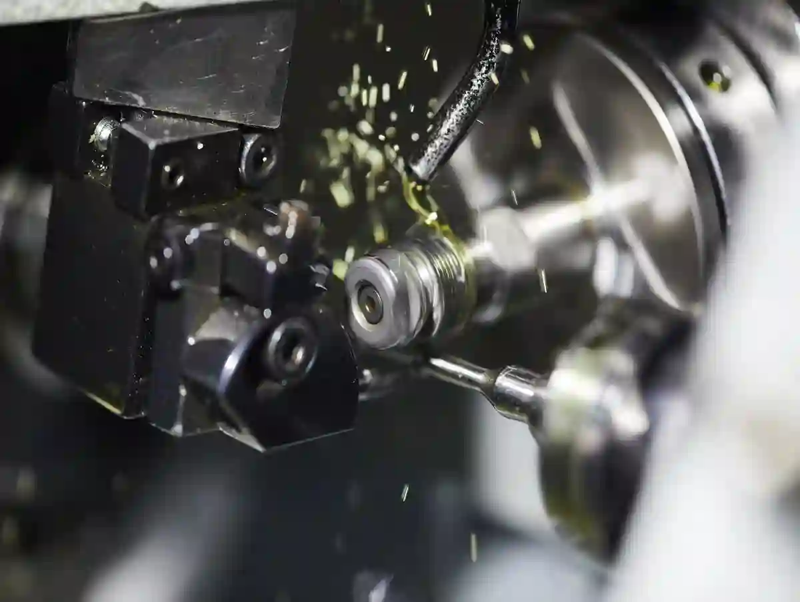
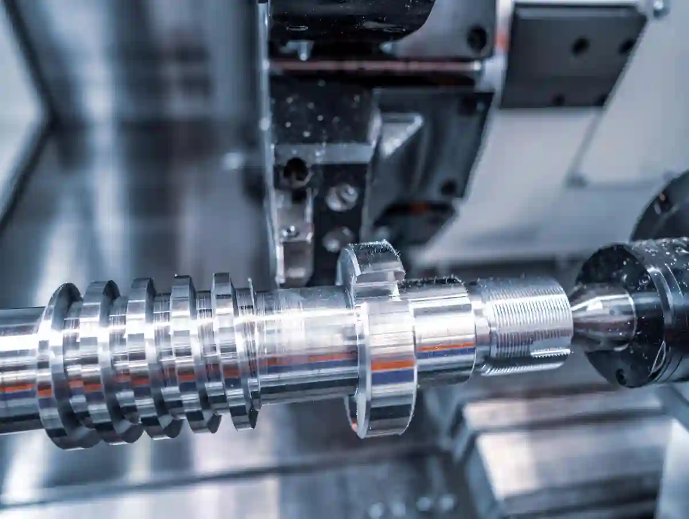
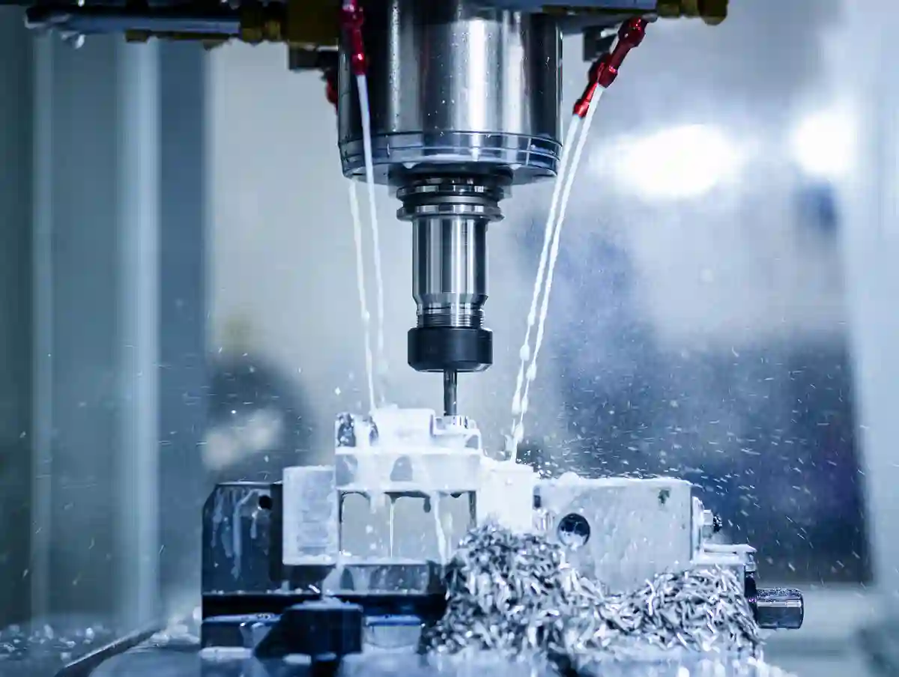
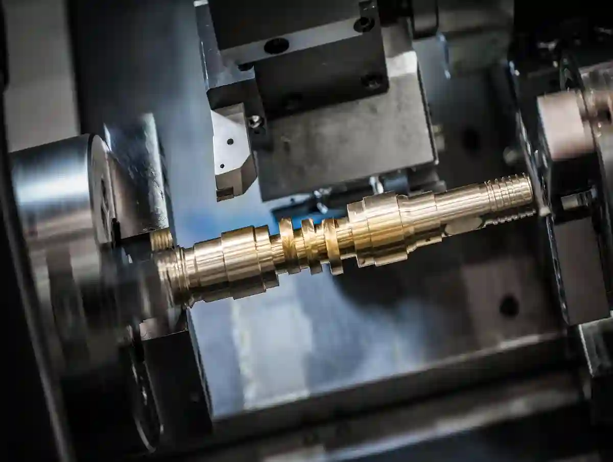
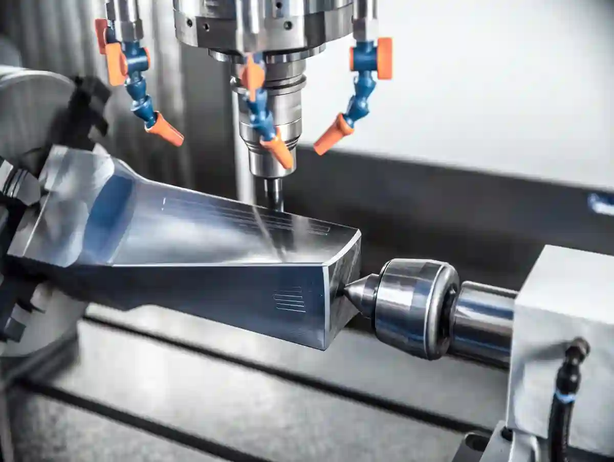

Talaşlı İmalat Malzemeleri – Talaşlı İmalatta Kullanılan Malzemeler Nelerdir?
Talaşlı imalat, yalnızca bir “kesme” operasyonu değildir; malzemenin mikroyapısı, ısıl iletkenliği, talaş kırılma davranışı ve yüzeyde bıraktığı iz, prosesin tamamını belirler. Bu nedenle talaşlı imalat malzemeleri seçimi; tolerans, çevrim süresi, takım ömrü ve toplam maliyet üzerinde aynı anda etkili olan stratejik bir karardır. Malzeme seçiminde yapılan küçük bir hata, doğru tezgâh ve doğru CAM stratejisiyle bile tam olarak telafi edilemeyebilir.
Bir parçanın teknik resminde “malzeme” satırı genellikle tek satırdır; ancak o satırın arkasında işlenebilirlik sınırları, sertlik aralıkları, kesme hızları, takım kaplaması seçimi, bağlama rijitliği ve ölçüm planı gibi onlarca değişken bulunur. Bu yüzden bu rehber, sahada en sık karşılaşılan metaller üzerinden ilerler: çelik talaşlı imalat, alüminyum cnc işleme, paslanmaz çelik işleme, pirinç talaşlı imalat ve titanyum cnc işleme. Her birinde hedef; “hangi malzeme daha iyi?” sorusundan çok, “hangi gereksinime hangi malzeme daha uygundur?” sorusuna teknik yanıt vermektir.
Bu yazıyı, sitenin üst kümesine doğal biçimde bağlamak için öncelikle şu merkez sayfayı incelemeniz faydalı olur: Talaşlı İmalat Blog.
Talaşlı İmalatta Malzeme Seçimi Neden Kritik Bir Parametredir?
Malzeme seçimi, doğrudan “işlenebilirlik penceresini” tanımlar. İşlenebilirlik penceresi; takımın malzemeye hangi hızda girebileceğini, talaşın kırılıp kırılmayacağını, kesme bölgesinde ısının nereye taşınacağını ve yüzeyde mikroyırtılma oluşup oluşmayacağını belirleyen sınırlar bütünüdür. Bu pencere daraldıkça proses daha “hassas” hale gelir: daha iyi bağlama, daha iyi takım, daha iyi soğutma ve daha disiplinli ölçüm gerekir.
Örneğin aynı geometri, aynı tolerans ve aynı yüzey pürüzlülüğü hedefiyle üretilecek iki parça düşünelim. Birinde alüminyum alaşımı, diğerinde paslanmaz çelik olsun. alüminyum cnc işleme tarafında yüksek kesme hızlarına çıkılabilir; fakat çapak ve yüzey sürtünmesi kontrol edilmezse kozmetik kusurlar artabilir. paslanmaz çelik işleme tarafında ise kesme ısısı daha kritik hale gelir; yanlış takım geometrisi, kısa sürede yığılma (built-up edge) ve yüzeyde çekme izi oluşturabilir. Aynı toleransı yakalamak için gereken proses yaklaşımı tamamen değişir.
Bu noktada malzeme seçimini etkileyen ana sınıflar şunlardır:
- Fonksiyonel gereksinimler: çekme dayanımı, akma dayanımı, yorulma, aşınma, korozyon.
- Üretim gereksinimleri: tolerans bandı, yüzey pürüzlülüğü, çapak toleransı, ölçüm yöntemi.
- Ekonomi: hammadde bulunabilirliği, işleme süresi, takım maliyeti, fire.
- Operasyonel: montaj uyumu, kaynak/ısıl işlem ihtiyacı, kaplama/sertleştirme ihtiyacı.
En Sık Kullanılan Malzemeler Hangileridir?
Talaşlı imalatta en sık kullanılan talaşlı imalat malzemeleri; karbon ve alaşımlı çelikler, paslanmaz çelikler, alüminyum alaşımlar, pirinç/bronz ve titanyum alaşımlarıdır. Seçim; dayanım, korozyon direnci, ağırlık hedefi, yüzey kalitesi ve maliyet dengesine göre yapılır.
Malzeme Ailelerini Doğru Okumak – “metal adı” Yetmez, Kalite Sınıfı Gerekir
Üretimde sık görülen hatalardan biri, malzemeyi yalnızca “çelik” veya “alüminyum” diye tanımlamaktır. Oysa çelik dediğinizde; düşük karbon, orta karbon, alaşımlı, ıslah çeliği, sementasyon çeliği, takım çeliği gibi çok farklı davranış sergileyen alt sınıflar vardır. Aynı şekilde alüminyumda 6xxx ve 7xxx serileri arasında işlenebilirlik ve mekanik özellikler anlamında ciddi farklar görülebilir.
Bu nedenle teknik resimde malzeme tanımı mümkün olduğunca net olmalıdır. Bu konuyu satın alma/teklif süreci perspektifinden detaylandıran sayfa şu bağlantıda yer alıyor: Talaşlı İmalatta Yüzey Kalitesi Neden Önemlidir?
İşlenebilirlik Perspektifi – Talaş Oluşumu, Isı Ve Takım Ömrü
Talaşlı imalatın kalbi, kesme bölgesinde oluşan talaştır. Talaş; kırılıp parçadan uzaklaşabiliyorsa, takım “nefes alır” ve yüzey daha stabil çıkar. Talaş uzayıp takım çevresine sarıyorsa, ısı birikir, takım kenarı hızla aşınır ve yüzey pürüzlülüğü dalgalanır. Malzeme seçimi, bu talaş davranışını doğrudan etkiler.
- Süneklik arttıkça talaş uzama eğilimi artar (özellikle bazı paslanmazlarda).
- Sertlik arttıkça takım yükü artar; fakat talaş daha kontrollü kırılabilir (uygun geometriyle).
- Isıl iletkenlik düşükse ısı takımda kalır (titanyum gibi) ve kaplama/soğutma seçimi kritikleşir.
Bu nedenle bir sonraki parçada malzeme ailelerine tek tek girerken, her birinde “talaş nasıl davranır ve bu neyi değiştirir?” sorusunu sabit tutacağız.
Çelikler – Çelik Talaşlı Imalat Neden Hâlâ “varsayılan” Tercihtir?
Çelikler, talaşlı imalatta en geniş kullanım alanına sahip malzeme grubudur. Bunun nedeni yalnızca dayanım değil; aynı zamanda tedarik sürekliliği, ısıl işlemle ayarlanabilir özellikler ve farklı kesici takım seçenekleriyle geniş bir proses penceresi sunmasıdır. çelik talaşlı imalat projelerinde, doğru kalite seçildiğinde hem seri üretimde tekrarlanabilirlik hem de özel parçada fonksiyonel güven sağlanır.
Çeliklerin talaşlı imalattaki avantajlarını üç başlıkta özetleyebiliriz: (1) rijitlik ve dayanım, (2) ısıl işlemle optimizasyon, (3) geniş standartlaşma. Ancak bu avantajlar, doğru çelik sınıfı seçilmediğinde “takım tüketimi” ve “işleme süresi” olarak geri dönebilir.

Karbon Çelikleri (Düşük/Orta Karbon) – Hızlı Işleme, Dengeli Maliyet
Düşük ve orta karbonlu çelikler; genel makine parçalarında, bağlantı elemanlarında ve şaft benzeri bileşenlerde sık kullanılır. Bu grupta işlenebilirlik genellikle iyi kabul edilir. Uygun takım geometrisi ve doğru kesme parametresiyle, yüzey kalitesi stabil alınabilir.
Bu sınıfta kritik nokta, malzemenin gerçek sertlik aralığıdır. Aynı kalite kodu, farklı tedarikçi partilerinde farklı sertlikte gelebilir. Eğer toleranslar sıkıysa, prosesin “sertlik toleransı” da planlanmalıdır.
Alaşımlı/Islah Çelikleri – Dayanım Yükselir, Proses Hassaslaşır
Alaşımlı ve ıslah çelikleri, yüksek dayanım istenen parçalarda devreye girer. Bu malzemelerde takım yükü artar; bağlama rijitliği ve titreşim kontrolü daha kritik hale gelir. Yüzeyde dalgalanma (chatter) görülürse, genellikle problem “parametre” gibi görünür; fakat çoğu zaman kök neden bağlama/rijitlik ve takım uzama oranıdır.
Takım Çelikleri – Sertlik Hedefi Yükselince Süreç Değişir
Takım çelikleri, kalıp bileşenleri veya aşınma yüzeyleri gibi alanlarda tercih edilir. Sertlik hedefi yükseldikçe, kaba işleme-ısıl işlem-finiş işleme gibi çok adımlı prosesler gündeme gelir. Bu noktada ölçüm planı da değişir; çünkü ısıl işlem sonrası distorsiyon beklenir.
Paslanmaz Çelikler – Paslanmaz Çelik İşleme Neden “Isıl Yönetim” İster?
Paslanmaz çelik işleme, sahada en çok “takım ömrü kısa” veya “yüzey tutmuyor” şikâyetiyle gelir. Bunun temel nedeni, paslanmazların bazı sınıflarında süneklik ve iş sertleşmesi eğiliminin yüksek olmasıdır. Kesme sırasında yüzey sertleşmeye başlarsa, bir sonraki paso daha zor hale gelir; takım kenarı hızla aşınır.

Austenitik Paslanmazlar – Talaş Kontrolü ve Yığılma Riski
Austenitik paslanmazlar, korozyon direnci avantajı sunar. Ancak talaş uzama eğilimi yüksektir. Bu nedenle talaş kırıcı geometriler, uygun ilerleme ve doğru soğutma stratejisi öne çıkar. Yetersiz soğutmada, kesme bölgesinde ısı artar; bu da hem yüzey pürüzlülüğünü hem de takım aşınmasını olumsuz etkiler.
Ferritik/Martenzitik Paslanmazlar – Sertlik ve Kırılganlık Dengesi
Bu sınıflarda sertlik artabilir ve talaş daha kontrollü kırılabilir. Ancak kırılganlık ve yüzeyde mikroçatlak riskleri, özellikle agresif parametrelerde dikkate alınmalıdır.
Standart perspektifini ve kalite dilini ortaklaştırmak için, “malzeme standardı ve uygunluk yaklaşımı” konusunda Türk Standardları Enstitüsü (TSE) yayınları ve hizmet başlıkları referans noktasıdır.
Alüminyum ve Alaşımlar – Alüminyum Cnc İşleme Neden “hızlı” Ama “hassas”tır?
Alüminyum cnc işleme tarafında en büyük avantaj, yüksek kesme hızlarında üretim yapılabilmesidir. Alüminyumun ısıl iletkenliği görece iyi olduğu için kesme bölgesindeki ısı daha rahat taşınır. Bu, çevrim sürelerini ciddi biçimde iyileştirebilir. Ancak alüminyumun “yumuşak” algısı yanıltıcıdır; yüzey ve çapak kontrolü doğru yapılmadığında kalite dalgalanması büyür.

6xxx Serisi – Genel Amaçlı, Dengeli
Birçok makine parçasında tercih edilen bu seri; işlenebilirlik ve mekanik özellikler açısından dengeli kabul edilir. Yüzey kalitesi isteniyorsa takım keskinliği ve talaş tahliyesi önem kazanır.
7xxx Serisi – Dayanım Yükselir, Proses Stratejisi Değişir
Dayanım artarken işleme dinamikleri değişir. Takım seçimi, kaplama ve parametreler yeniden optimize edilmelidir.
Proses Seçiminde Referans Sayfalar
Malzeme seçiminin “hangi tezgâh/proses?” tarafına bağlanması için aşağıdaki hizmet sayfaları doğrudan ilişkilidir:
- Silindirik/dönel parçalar için CNC Tornalama
- Prizmatik/cepli/konturlu parçalar için CNC Frezeleme ve Dik İşleme
Pirinç ve Bronz – Pirinç Talaşlı İmalat Nerede Öne Çıkar?
Pirinç talaşlı imalat, sahada genellikle “kolay işleniyor” algısıyla bilinir ve çoğu uygulamada bu doğrudur. Pirinç; talaş kırma davranışı, yüzey kalitesi ve ölçü stabilitesi bakımından avantajlıdır. Bu yüzden vana-armatür bileşenleri, elektrik iletken parçaları, burçlar ve hassas bağlantı elemanlarında sık görülür.
Ancak pirinç seçiminde de alt sınıflar belirleyicidir. Bazı pirinç türlerinde işlenebilirlik çok yüksekken, bazı alaşımlarda yüzeyde “sürüklenme” ve çapak davranışı farklılaşabilir. Ayrıca uygulama ortamında korozyon türü (ör. dezinkifikasyon riski) değerlendirilmelidir.

Pirinçte Proses Avantajı – Yüzey Kalitesi ve Talaş Kontrolü
Pirinçte çoğu zaman yüksek yüzey kalitesi, nispeten düşük riskle alınabilir. Buna rağmen “takım keskinliği” önemini korur; körelmiş takım, özellikle ince cidarlı parçalarda yüzeyde iz bırakabilir.
Bronz ve Yatak Malzemeleri – Sürtünme ve Aşınma Odaklı Seçim
Bronzlar; yataklama, sürtünme ve aşınma yüzeylerinde öne çıkar. Talaşlı imalatta yüzeyin mikro yapısı, yağlama filmi davranışını etkileyebilir. Bu nedenle “yüzey pürüzlülüğü hedefi” fonksiyonla birlikte değerlendirilmelidir.
Titanyum ve Süperalaşımlar – Titanyum Cnc İşleme Neden Ayrı Bir Disiplin?
Titanyum cnc işleme, çoğu atölyede “zor malzeme” sınıfına girer. Bunun temel nedeni; titanyumun düşük ısıl iletkenliği nedeniyle kesme bölgesindeki ısının takım üzerinde birikmesi ve bazı alaşımlarda kimyasal reaktivite nedeniyle takım kenarında hızlanan aşınmadır. Sonuç olarak takım seçimi, soğutma yaklaşımı ve kesme stratejisi bir “paket” olarak ele alınmalıdır.
Bu malzeme ailesinde tipik hedef; yüksek dayanım/ağırlık oranı ve korozyon direncidir. Medikal ve havacılık benzeri alanlarda, yüzey kalitesi ve mikroyapı hassasiyeti daha da kritikleşir.
Titanyum ve alaşımlarının temel özelliklerine dair mühendislik perspektifi için, İTÜ Malzeme Bilgisi (MAL 201) ders notu teknik bir referans sağlar.

Titanyumda Pratik Riskler – Isı, Talaş ve Takım Kenarı
Titanyum işlenirken agresif parametreler, kısa sürede takım kenarında aşınma yaratabilir. Bu nedenle çoğu uygulamada stabil ilerleme, kontrollü kesme derinliği ve kesme bölgesini sürekli “serin” tutacak stratejiler tercih edilir. Ayrıca bağlama rijitliği yetersizse, yüzeyde dalgalanma çok hızlı büyür.
Dökme Demir, Bakır ve Mühendislik Plastikleri – Niş Ama Kritik Malzemeler
Bu yazının odağı, en yaygın metaller olsa da talaşlı imalatta şu malzemeler de sık görülebilir:
Dökme Demir – Titreşim Sönümleme Avantajı, Toz/Talaş Yönetimi
Dökme demir, bazı makine gövdelerinde ve titreşim sönümleme istenen parçalarda avantaj sağlar. Ancak talaş “tozlu” olabilir; takım ve makine içi temizlik disiplini önemlidir.
Bakır – İletkenlik Yüksek, Yapışma Riski
Bakırda kesme sırasında yapışma ve yüzey sürüklenmesi görülebilir. Keskin takım ve doğru parametre, yüzey kalitesini belirler.
Mühendislik Plastikleri – Tolerans ve Termal Genleşme
Plastiklerde toleransın korunması; termal genleşme, bağlama basıncı ve takımın yüzeyi “eritme” riskine bağlıdır. Bu nedenle metal gibi agresif parametreler uygulanmaz.
Malzeme ve Proses İlişkisini Derinleştirme
Malzemenin proses davranışını (operasyon sıralaması, takım yolu, yüzey kalitesi etkisi) geniş çerçevede okumak için şu sayfa doğru bir tamamlayıcıdır: CNC Üretimde Kullanılan Malzemeler ve Etkileri
Malzeme Seçim Kriterleri – “dayanım” Tek Başına Yeterli Değil
Sahada malzeme seçimi çoğu zaman “dayanım” üzerinden başlar. Oysa talaşlı imalatta dayanımın yanında en az dört teknik eksen daha vardır:
- (1) işlenebilirlik,
- (2) ölçü kararlılığı,
- (3) yüzey davranışı,
- (4) tedarik ve maliyet sürekliliği.
Talaşlı imalat malzemeleri değerlendirmesinde bu eksenler birlikte okunmadığında, proje teklif aşamasında iyi görünen plan üretimde zorlanır.
İşlenebilirlik – Çevrim Süresi ve Takım Maliyeti
İşlenebilirlik, pratikte iki şeye dönüşür: çevrim süresi ve takım maliyeti. Çok sert veya iş sertleşen malzeme; çevrim süresini uzatır ve takım tüketimini artırır. Bu artış, birim parça maliyetini doğrudan büyütür.
Isıl Davranış – Toleransın Gizli Düşmanı
Kesme sırasında malzeme ısınır; ölçü değişir. Özellikle uzun parçalar veya ince cidarlı geometrilerde, ısı yönetimi toleransın korunmasında kritik hale gelir. Bu yüzden paslanmaz çelik işleme ve titanyum cnc işleme gibi malzemelerde proses “ısıyı yönetme” üzerine kurulur.
Korozyon ve Ortam Koşulları – Malzemenin Sahadaki Hayatı
Parça; nem, kimyasal, tuz, sıcaklık değişimi gibi çevresel koşullarda çalışıyorsa malzeme seçimi değişir. Burada paslanmaz veya titanyum gibi seçenekler öne çıkabilir; fakat maliyet artışı ve işleme zorlukları, fonksiyonel gereksinimle dengelenmelidir.
Malzeme, Avantaj, Dikkat Noktası
Aşağıdaki özet, talaşlı imalat malzemeleri için hızlı kıyas sağlar:
- Çelik: Dayanım ve maliyet dengesi iyi – Sertlik değişkenliği proses planını etkiler.
- Paslanmaz: Korozyon direnci yüksek – Isı/talaş kontrolü ve iş sertleşmesi yönetilmeli.
- Alüminyum: Hafif ve hızlı işlenebilir – Çapak/yüzey kontrolü ve takım keskinliği kritik.
- Pirinç: Yüzey kalitesi ve talaş kırma iyi – Alaşım türüne göre korozyon riski okunmalı.
- Titanyum: Dayanım/ağırlık oranı yüksek – Isı takımda birikir; takım/soğutma stratejisi şart.
Malzemeye Göre Proses Stratejisi – Takım, Soğutma, Bağlama
Malzeme seçimi yapıldıktan sonra ikinci kritik karar, proses stratejisidir. Aynı malzemede bile yanlış strateji; gereksiz süre ve kalite dalgalanması yaratır.
Kesici Takım Seçimi – Geometri ve Kaplama Uyumu
Takım geometrisi; talaşı kırar veya uzatır, yüzeyi parlatır veya yırtar. Kaplama ise ısı ve sürtünme yönetiminde rol alır. Örneğin alüminyumda yapışmayı azaltan geometri/kaplama kombinasyonları; paslanmazda ise ısıya ve aşınmaya dayanım sağlayan seçenekler öne çıkar.
Soğutma ve Talaş Tahliyesi – Prosesin Stabilitesi
Soğutma yalnızca “ısıyı düşürmek” değildir; talaşı kesme bölgesinden uzaklaştırmak ve yüzeyi stabil tutmaktır. Talaş bölgeden çıkmazsa, takım tekrar talaş kesmeye başlar; bu da yüzey pürüzlülüğünü hızla bozar.
Bağlama Rijitliği – Toleransın Korunması
Özellikle ince cidarlı parçalarda bağlama kuvveti, parçada elastik deformasyona yol açabilir. Bu deformasyon işleme sırasında görünmez, fakat bağlamadan çıktıktan sonra ölçü “kaçmış” gibi algılanır. Bu nedenle bağlama, malzeme ve geometriyle birlikte tasarlanmalıdır.
Ölçüm ve İzlenebilirlik – Kaliteyi Doğrulamak için Ortak Dil
Tolerans hedefi sıkılaştıkça ölçüm disiplininin de güçlenmesi gerekir. Üretimde ölçüm sonuçlarının güvenilirliği, izlenebilirlik kavramıyla doğrudan ilişkilidir. Bu konuda izlenebilirlik yaklaşımı ve hiyerarşi için TÜRKAK “Ölçümlerin İzlenebilirliği” rehberi yol gösterici bir referanstır.
Sektörel Uygulama Mantığı – Aynı Malzeme, Farklı Öncelikler
Aynı talaşlı imalat malzemeleri farklı sektörlerde bambaşka önceliklerle seçilebilir. Otomotivde çevrim süresi ve maliyet baskınken, medikalde yüzey ve biyouyumluluk; enerjide korozyon ve uzun ömür; savunmada izlenebilirlik ve proses güvenliği daha yüksek öncelik kazanabilir. Bu yüzden malzeme seçimi “tek boyutlu” değil, sektör-uygulama-risk üçgeninde okunmalıdır.
Otomotiv – Seri Üretim, Tekrarlanabilirlik, Maliyet
Otomotiv tarafında çoğu parçada çelik ve alüminyum dengesi öne çıkar. Hafifleme hedefiyle alüminyum artarken, yüksek dayanım ve aşınma bölgelerinde çelik hâlâ kritik rol oynar. Burada ana hedef, proses kararlılığıdır.
Medikal – Yüzey ve Malzeme Davranışı
Medikal uygulamalarda titanyum ve paslanmaz seçenekleri yaygındır; ancak yüzeyin mikro davranışı ve işleme sırasında oluşabilecek yüzey kusurları daha hassas yönetilmelidir.
Enerji ve Endüstriyel Makine – Dayanım ve Çevresel Dayanıklılık
Enerji ve endüstriyel makinede; yük, sıcaklık ve çevresel etkiler artabilir. Bu nedenle malzeme seçimi; yalnızca dayanım değil, korozyon ve yorulma perspektifiyle yapılır.
Malzeme Seçiminde Son Kontrol Listesi: Riskleri Üretimden Önce Kilitleyin
Üretime geçmeden önce kısa bir kontrol listesiyle malzeme kaynaklı sürprizleri azaltmak mümkündür. İlk adım, teknik resimde belirtilen malzeme standardı ve sertlik aralığını netleştirmektir; çünkü talaşlı imalat malzemeleri aynı isimle anılsa bile farklı partilerde farklı işlenebilirlik gösterebilir. İkinci adım, operasyon sıralamasını malzemenin davranışına göre planlamaktır; örneğin paslanmaz çelik işleme süreçlerinde iş sertleşmesini tetiklemeyecek pasolar ve stabil ilerleme değerleri kritik rol oynar.
Üçüncü adım, takım ve soğutma stratejisini doğrulamaktır; alüminyum cnc işleme tarafında yüzey sürtünmesi ve çapak riski, kesici geometri ve talaş tahliyesiyle doğrudan ilişkilidir. Son adımda ise tolerans/yüzey hedefini “ölçülebilir” hale getirip kontrol planına bağlamak gerekir; özellikle titanyum cnc işleme projelerinde ısı yönetimi ve takım ömrü, ölçü stabilitesini belirleyen ana parametrelerdir.
Sonuç – Doğru Malzeme Seçimi, Üretim Kalitesini “başlamadan” Belirler
Bu rehberdeki ana fikir nettir: talaşlı imalat malzemeleri seçimi, işleme başlamadan önce kaliteyi ve maliyeti büyük ölçüde belirler. Çelik, paslanmaz, alüminyum, pirinç ve titanyum; her biri güçlü seçeneklerdir; ancak her biri farklı proses disiplini ister. Malzeme seçimini; tolerans, yüzey hedefi, çevrim süresi ve ölçüm planıyla birlikte ele aldığınızda, üretimde sürprizler azalır ve kalite daha öngörülebilir hale gelir.
Eğer siz de parça fonksiyonunu, çalışma ortamını ve teknik resim hedeflerini bir araya getirip “en doğru malzeme-en doğru proses” eşleşmesini kurmak istiyorsanız, karar sürecini tek bir soruyla başlatın: Bu parçada asıl kritik olan nedir-dayanım mı, ağırlık mı, korozyon mu, yüzey mi, yoksa maliyet mi? Bu sorunun cevabı, doğru malzeme ailesini işaret eder ve proses stratejisini netleştirir.